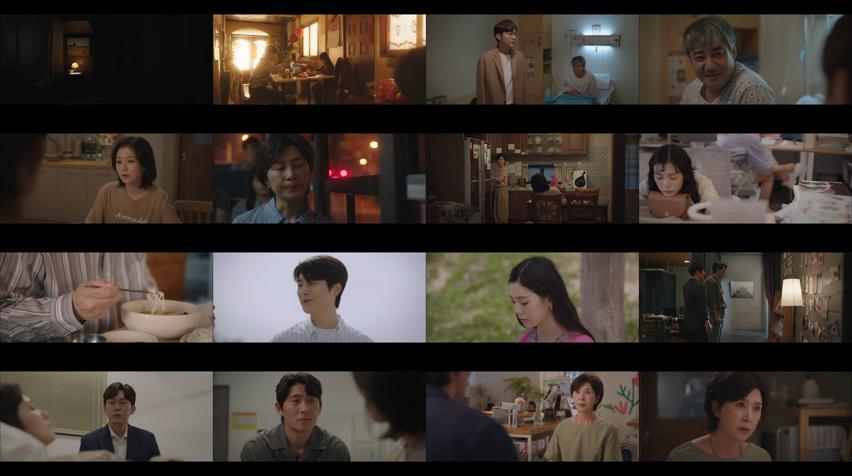
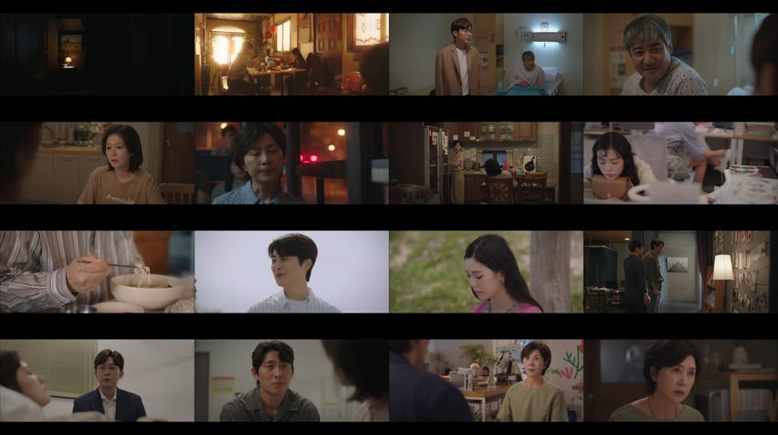

Oh My Baby (Tagalog Dubbed)
Aged 39, Jang Ha Ri is the ultimate workaholic. She hasn’t even had a boyfriend in the past decade, long ago decided to forget about looking for love, and instead has thrown her energy into her career.
However, as she works as a senior reporter for a parenting magazine named “The Baby,” she is constantly reminded of the one thing she wants most in life – to have a baby of her own.
She decides to cut to the chase and try for a baby but wants to skip one key stage – and resolves not to marry.
But as she turns her mind to single parenthood, she suddenly realizes that she is surrounded by admirers: freelance photographer Han Yi Sang, super-smart pediatrician Yoon Jae Young, and the office newbie, the doting Choi Kang Eu Ddeum.
Could any of these three love candidates help Jang Ha Ri in her quest to become a mother?
And could her quest inadvertently send her on the path to true love?


 
